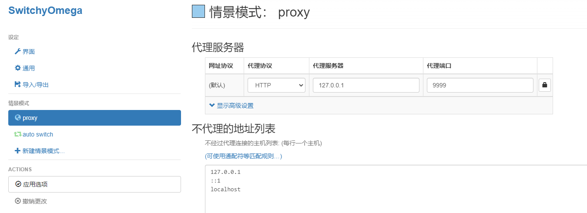

雪重
Python Developer
知识 汗水 灵感 机遇
2023年10月7日 proxy
隧道代理
可以参考下青南大佬的这篇文章，使用redis存储代理ip+openresty转发
https://juejin.cn/post/6988289418637344782
下面分享下我是如何实现的，手中有一批静态长效socks代理，Windows下通过3proxy搭建一个转发隧道。
https://github.com/3proxy/3proxy/releases
编辑配置文件3proxy.cfg
# daemon
# nserver 8.8.8.8
# nserver 8.8.4.4
# nscache 65536
# timeouts 1 5 30 60 180 1800 15 60
log 3proxy.log
# users username:CL:password
# auth none
allow *
# 权重和为1000
parent 500 socks5 134.*.*.3 9999 name pwd
parent 500 socks5 23.*.*.131 9999 name pwd
proxy -p9999
3proxy目录结构

启动
3proxy.exe 3proxy.cfg
检验
使用浏览器代理插件，设置隧道ip和端口（此处为127.0.0.1和9999）

访问 http://ip111.cn/ ip检测网站，每次请求的ip都会变换，实现了隧道代理。